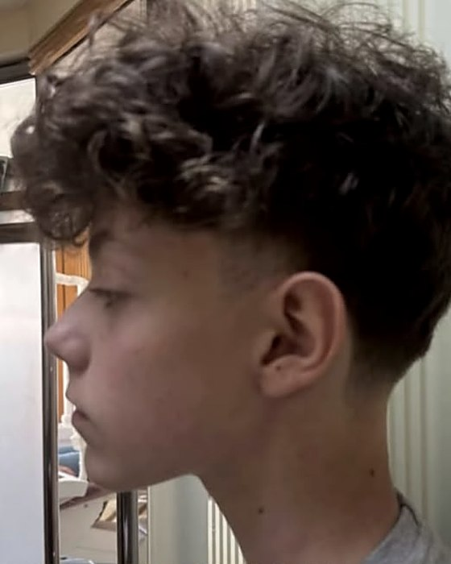
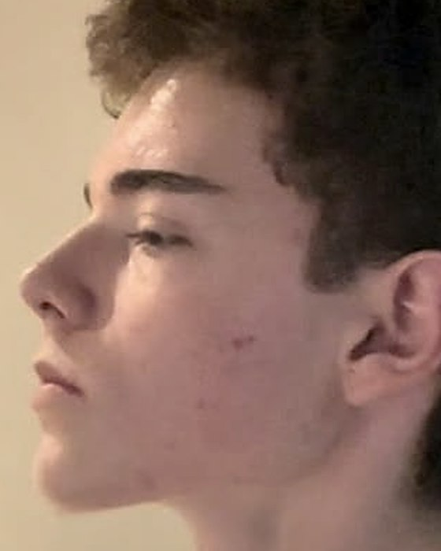

Degrau 0
Hábito
Sono, respiração nasal, postura, gordura corporal, higiene. É o degrau que mais gente ignora e o que mais retorna por unidade de esforço. Sem ele, nenhum procedimento rende o que deveria.
Um guia técnico de aparência masculina organizado em quatro degraus de custo e risco: hábito, consumível, procedimento, cirurgia. Você começa pelo degrau que é gratuito, porque é onde está a maior parte do resultado.
PDF para leitura imediata · 7 dias para desistir e receber de volta
Este bloco está aqui porque é o filtro mais rápido. Se você quer alguma das quatro, economize seu dinheiro e feche a página.
Todo capítulo do livro segue a mesma estrutura. Ela existe para resolver o erro mais comum de quem começa: pular direto para o degrau 3 sem ter feito o degrau 0.
Sono, respiração nasal, postura, gordura corporal, higiene. É o degrau que mais gente ignora e o que mais retorna por unidade de esforço. Sem ele, nenhum procedimento rende o que deveria.
Skincare, produto de cabelo, suplementação que corrige deficiência real, roupa que serve. Retorno moderado e previsível, desde que sustentado por meses e não por três semanas.
Toxina botulínica, preenchimento, laser, microagulhamento, ortodontia. Geralmente reversível ou temporário. Exige profissional habilitado, e exige critério na escolha dele.
Ortognática, blefaroplastia, implantes, rinoplastia. É o último degrau porque o erro aqui não tem desfazer. O guia traz as cinco perguntas que precisam estar respondidas antes de marcar consulta.
Não suba de degrau enquanto o anterior não estiver esgotado. Não faz sentido gastar com preenchimento de olheira dormindo cinco horas por noite. Não faz sentido pensar em implante de mandíbula com 22% de gordura corporal.
Os primeiros 80% vêm de sono, gordura corporal, pele, corte de cabelo e roupa que serve. Os últimos 5% custam muito dinheiro, muito risco, e quase ninguém além de você percebe. Saber onde parar faz parte do método.
Foto de antes e depois sem leitura é propaganda. Cada marcador abaixo aponta uma região específica do rosto e diz o que mudou ali, o que produz aquela mudança e o que continua sendo osso que ninguém move com hábito.


A borda óssea acima do olho aparece porque perdeu o edema que a cobria. O relevo já existia. O que mudou foi a camada de água e gordura em cima dele, e isso é sono e sal, capítulo 1 e capítulo 6.
O gônio é o canto de trás da mandíbula. Ele fica legível quando cai a gordura do terço inferior e o masseter tem tônus. Ângulo ósseo não se cria em adulto, se revela.
O mento fecha a linha do perfil. Parte do ganho aqui é real perda de gordura submentual, parte é postura de cabeça e posição de língua em repouso. A parte esquelética é conversa de ortodontista, capítulo 3.
A dobra entre mandíbula e pescoço é o que a maioria chama de jawline. É o marcador mais sensível a gordura corporal e retenção de líquido, e o primeiro a voltar se os dois voltarem.
Menos inchaço periorbital muda a sombra da órbita inteira. O olhar fecha, a sobrancelha ganha linha, e nada disso é osso novo. É o capítulo 1 junto com o capítulo 6.
O relevo do malar aparece quando a gordura subcutânea da bochecha diminui. Na frontal é a região que mais responde a composição corporal, e a que mais some quando ela volta.
Na vista de frente, o gônio define a largura do terço inferior. Largura óssea é dada. O que muda é quanto dela fica visível por baixo de gordura e retenção.
Contorno de mandíbula mais legível, textura e vermelhidão menores. Pele é o capítulo 2, e é a área onde a mudança leva 12 semanas para aparecer em foto.
Como ler essas fotos. São casos individuais, não média e não garantia. Nas duas comparações três coisas mudaram ao mesmo tempo: gordura corporal, retenção de líquido e tempo. Osso adulto não remodela com hábito, e o capítulo 3 é explícito sobre isso. O que o protocolo faz é tirar o que estava cobrindo a estrutura que já existe, e somar pele, cabelo, postura e enquadramento. Quem tem crescimento em curso soma também o efeito da idade, que não é mérito de protocolo nenhum. Tratamento das imagens: recorte e escala para a cabeça ficar do mesmo tamanho nos dois lados, e o mesmo ajuste de cor aplicado às duas fotos do par. Sem retoque de traço, sem filtro de rosto.
Arco supraciliar, zigomático, rebordo infraorbital, maxila, corpo da mandíbula, ramo e gônio. O que cada região é, como se avalia em foto, o que nela é osso fechado e o que é só o que está por cima. Treze páginas novas, com as duas leituras que decidem tudo: perfil e frontal.
Dimensão esquelética já fechada: largura bizigomática, altura do ramo, comprimento do corpo mandibular, projeção da maxila. Hábito nenhum move isso em adulto.
Aceitar, ou sentar com ortodontista e cirurgiãoEstrutura que já existe e está debaixo de gordura e retenção: contorno de mandíbula, gônio, relevo do zigomático, rebordo infraorbital. É a maior parte do que as pessoas chamam de estrutura.
Degrau 0, e é de graçaO que responde a carga e função em qualquer idade: densidade e espessura cortical, a inserção do masseter no gônio, volume muscular, posição dentária, postura de cabeça.
Carga mastigatória, postura, ortodontiaCarga mecânica deforma a matriz óssea, o fluido dos canalículos se move, e o osteócito lê esse cisalhamento. A resposta dele é derrubar a esclerostina, que é o freio do osteoblasto, e derrubar o RANKL, que é o recrutador do osteoclasto. A célula que constrói acelera e a que desmonta desacelera ao mesmo tempo.
O masseter se insere exatamente no ângulo da mandíbula, o que faz dela o único osso do rosto que você carrega de propósito. A Parte III traz a cadeia inteira, a faixa de carga que constrói e a que machuca, o protocolo de doze semanas e a tabela de prazo por tipo de ganho: músculo em semanas, superfície óssea em meses, dimensão esquelética nunca sem ortodontia ou cirurgia.
Cada capítulo termina em um protocolo consolidado: a lista do que fazer, na ordem, sem precisar reler o capítulo.
Canthal tilt, hooding, exposição escleral, projeção infraorbital. A tabela que separa o que é estrutural do que responde a hábito, e por que sombra de projeção rasa não é olheira de pigmento.
Menos produtos, mais tempo. O combo universal de três itens, a base mínima em volta dele, quais ativos não se misturam, e protocolo de acne separado por gravidade.
O que realmente muda o rosto adulto: gordura corporal, retenção de líquido, respiração nasal, postura cervical, masseter. E onde a conversa passa a ser de ortodontista ou cirurgião.
Conheça a curvatura e a espessura antes de comprar qualquer coisa. Corte por formato de rosto, e o vocabulário exato para pedir ao barbeiro o que você quer sem sair com outra coisa.
O que a silhueta comunica, prioridade de treino por retorno visual, cutting e bulking decididos por média semanal de peso, e a auditoria de guarda roupa pelo critério da costura do ombro.
Por que sono é a variável central: mexe em olheira, inchaço, pele, hormônio e composição corporal ao mesmo tempo. Os sinais que indicam apneia e não falta de disciplina.
Metade do ganho vem de não fazer coisa errada. Doze mitos desmontados, as quatro armadilhas de percurso, e a lista de sinais de quando o problema deixou de ser estético.
As seis regiões do esqueleto facial, as referências de leitura do perfil e da frontal, o protocolo de mastigação em quatro fases, os nutrientes que sustentam osso e por que bonesmashing continua fora.
A cadeia da mordida até a célula que constrói osso, a faixa de carga que serve e a que machuca, o protocolo de doze semanas com progressão e deload, e a tabela de prazo por tipo de ganho.
Tudo em ordem de execução. Semana 0 de linha de base, duas semanas sem comprar nada, primeiras compras na semana 3, foto de controle no dia 30, avaliação real no dia 90.
Esta tabela está no livro e é a página que mais gente fotografa. Ela existe para você não desistir na semana 6 achando que nada funcionou.
| Área | Primeiros sinais | Resultado consolidado |
|---|---|---|
| Inchaço facial | 3 a 7 dias | 4 semanas |
| Postura e perfil | 4 semanas | 3 a 6 meses |
| Pele, textura e acne | 8 a 12 semanas | 6 meses |
| Marcas pós inflamatórias | 3 meses | 6 a 12 meses |
| Cabelo | imediato no corte | 6 meses |
| Gordura corporal | 4 semanas | 3 a 6 meses |
| Massa muscular visível | 3 meses | 12 a 24 meses |
| Ortodontia | 6 meses | 1 a 3 anos |
Não por ceticismo decorativo. Cada um desses tem uma rota alternativa descrita em outro capítulo, com risco controlado.
Bonesmashing deixa a mandíbula marcada.
Remodelação óssea responde a carga distribuída e progressiva, não a impacto traumático. O tecido que se forma em resposta a trauma se deposita onde a lesão foi, na quantidade que ela gerou, no formato que a cicatrização produzir. Ninguém controla isso. Os resultados possíveis são, em ordem de probabilidade: nada, assimetria permanente, ou dano.
Mewing muda o esqueleto do adulto.
Postura correta de língua e respiração nasal são hábito válido e estão no degrau 0. Remodelação óssea em adulto por pressão de língua não acontece. E pressão forte não acelera nada: pode inclinar dentes e criar problema ortodôntico.
Suplemento X faz crescer cabelo e barba.
Se você não tem a deficiência, o suplemento não faz nada. Faz mais sentido verificar com exame do que comprar às cegas. A mesma lógica vale para o que se vende como booster hormonal.
7 dias para desistir. Compra online no Brasil tem direito de arrependimento por lei. Se você abrir o arquivo e concluir que não é para você, responda o email da compra dentro de 7 dias e o valor volta integral, sem precisar justificar.
Não, e o livro diz isso na segunda página. O material é informativo. Medicamentos, procedimentos estéticos e cirurgias citados exigem acompanhamento de profissional habilitado. O que o guia faz é te deixar preparado para a consulta: saber o que perguntar, o que já esgotou em casa e o que ainda não faz sentido pedir.
Não. São casos individuais e estão na página justamente com a leitura do que mudou em cada região. Em todos eles mudaram ao mesmo tempo gordura corporal, retenção, pele e tempo, e parte do efeito em quem ainda cresce vem da idade. O guia não promete reproduzir nenhuma dessas fotos, promete o protocolo que organiza as variáveis que estão sob seu controle.
Nas duas primeiras semanas, nada. O degrau 0 é inteiramente gratuito: sono, respiração, postura, higiene, gordura corporal. A primeira lista de compras aparece na semana 3 e tem três itens, não trinta. Um dos pontos centrais do livro é que comprar antes de fazer dá a sensação de progresso sem o progresso.
Serve. A parte de estrutura óssea muda de tom, porque expansão e ortodontia respondem diferente depois do fechamento das suturas, e o livro é explícito sobre isso. Pele, sono, físico, cabelo e eye area funcionam igual, e é ali que está a maior parte do retorno em qualquer idade.
Não. Ficou fora desta edição de propósito, porque exige avaliação médica individualizada e porque um capítulo genérico sobre isso faria mais mal que bem. Se queda de cabelo é a sua questão principal, este não é o material certo para você agora.
Cada capítulo fecha em um protocolo consolidado, e o capítulo 8 junta todos em uma sequência de 90 dias dividida por semana, com o que iniciar, o que manter e quando tirar a foto de controle. A leitura leva uma tarde. A execução leva 90 dias.
Por email, logo após a confirmação do pagamento. É um PDF, abre em celular, tablet ou computador, sem aplicativo nem login. Se o email não chegar, responda o comprovante e o arquivo é reenviado manualmente.
A primeira tratava as áreas de forma isolada. Esta reorganiza tudo pela escada de custo e risco, adiciona o capítulo de sono e hormônio, expande o de mitos, e fecha com o plano integrado de 90 dias que antes não existia.
Então o valor está em outro lugar: na tabela que separa o que é estrutural do que não é, nos prazos reais por área, e nas quatro armadilhas de percurso. A mais comum entre quem já faz bastante coisa é trocar de protocolo a cada três semanas e nunca medir nada.
É gratuito, é onde está a maior parte do resultado, e é o que quase todo mundo pula. O guia serve para você não pular.